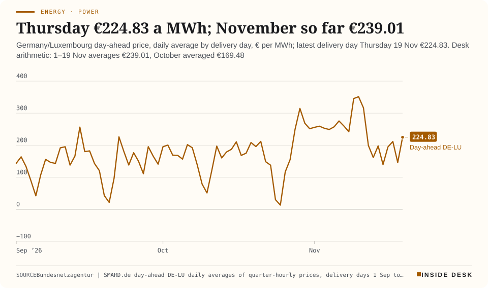
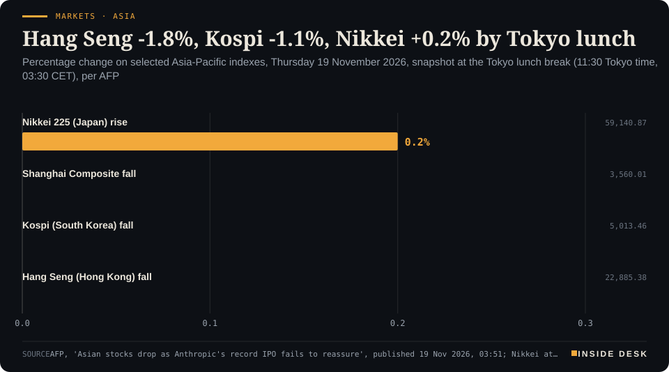
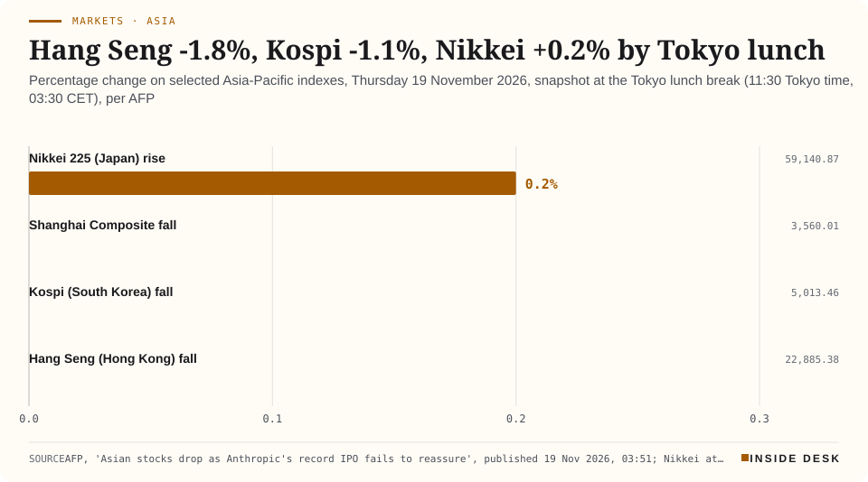

Inside Desk ePaper, Morning ePaper · Thu 19 Nov 2026
Thursday, 19 November 2026Always free
Inside Desk
Morning ePaperAvailable 06:30 CET · Berlin
Lead · Energy & Industry
The coalition's tax cut got its verdicts and its first sum; Thursday's day-ahead price shows the bigger author. Also: Asia sells after Anthropic's $83 debut, Australia's jobless rate hits 4.9%, France rations a water pill, a red rain warning for the Black Forest, and a Podium vs Print on workers' rights.
Energy · PowerThursday €224.83 a MWh; November so far €239.01Germany/Luxembourg day-ahead price, daily average by delivery day, € per MWh; latest delivery day Thursday 19 Nov €224.83. Desk arithmetic: 1–19 Nov averages €239.01, October averaged €169.48

Line chart of the daily average German-Luxembourg day-ahead electricity price from 1 September to 19 November 2026, in euros per megawatt hour. Prices mostly ran between about €100 and €210 in September and October, climbed above €250 from late October, peaked at €351.48 on Tuesday 10 November, fell to €139.70 on Sunday 15 November and €146.25 on Wednesday 18 November, and stand at €224.83 for the latest delivery day, Thursday 19 November.
Source: Bundesnetzagentur | SMARD.de day-ahead DE-LU daily averages of quarter-hourly prices, delivery days 1 Sep to 19 Nov 2026 (latest available: Thursday 19 Nov €224.83; no Friday prices published yet), retrieved 19 Nov 2026, 05:27 CET · CC BY 4.0 · CSV
Geo-economics · p. 4
Markets & Macro · p. 5
Climate & Weather · p. 15
The day in one sentenceBerlin's electricity-tax cut is worth about €8 a month to a family while one breakfast quarter-hour on the power exchange cost €281, Asia sold after New York's record listing, and the useful news sat in tariff letters, rationed pills and wheat harvests, not in the verdicts.
ContentsInside Desk · Morning ePaper19 November 2026
The coalition's tax cut got its verdicts and its first sum; Thursday's day-ahead price shows the bigger author. Also: Asia sells after Anthropic's $83 debut, Australia's jobless rate hits 4.9%, France rations a water pill, a red rain warning for the Black Forest, and a Podium vs Print on workers' rights.
11 edition pieces · 11 desks · Available 06:30 CET, 19 November 2026
22 ePaper extras, added , 19 November. They appear only in the ePaper and carry their own time.
17:30 Evening ePaper, updated live until 22:30 with an “Updated” time and a Latest page
Sun 10:00 The Sunday Magazine
Berlin time. Every issue is free.
How to read it
Swipe, use the arrow keys or the page strip. Tap any headline for the reading view. Press / to search, t for contents, +/− to zoom. Download the PDF.
LeadInside Desk · Morning ePaper19 November 2026
Energy & Industry · Lead · 3 min
The coalition's electricity-tax cut drew its verdicts on Wednesday. Thursday's day-ahead price shows how much else on the bill nobody voted for.
Wednesday was the day of verdicts on the coalition’s electricity-tax cut, and they arrived in neat, quotable pairs. “Überfällig”, said the left; “kleiner Hüpfer”, said the Greens; “abenteuerlich”, said the director of the IW institute about the way it is paid for2. Thursday morning brought the more useful thing: an actual sum. According to an example calculation by the comparison portal Verivox, reported by MDR, a family of three saves just under €8 a month from the cut, and someone living alone about €31.
Desk arithmetic: €8 a month is roughly €96 a year for that family. It is real money, and it is also small next to the part of the bill that is set not in the Chancellery but on the exchange.
Energy · PowerThursday €224.83 a MWh; November so far €239.01Germany/Luxembourg day-ahead price, daily average by delivery day, € per MWh; latest delivery day Thursday 19 Nov €224.83. Desk arithmetic: 1–19 Nov averages €239.01, October averaged €169.48
Line chart of the daily average German-Luxembourg day-ahead electricity price from 1 September to 19 November 2026, in euros per megawatt hour. Prices mostly ran between about €100 and €210 in September and October, climbed above €250 from late October, peaked at €351.48 on Tuesday 10 November, fell to €139.70 on Sunday 15 November and €146.25 on Wednesday 18 November, and stand at €224.83 for the latest delivery day, Thursday 19 November.
Source: Bundesnetzagentur | SMARD.de day-ahead DE-LU daily averages of quarter-hourly prices, delivery days 1 Sep to 19 Nov 2026 (latest available: Thursday 19 Nov €224.83; no Friday prices published yet), retrieved 19 Nov 2026, 05:27 CET · CC BY 4.0 · CSV
The other author
For delivery on Thursday, the German-Luxembourg day-ahead price averages €224.83 per megawatt hour across the day, according to SMARD, the Federal Network Agency’s data platform3. Inside that average the day has a shape you will recognise from your own kitchen. The cheapest quarter-hour came at 02:15, at €166.52; the dearest at 08:15, at €281.00, when the country is making coffee and starting machines3. The hour from 08:00 to 09:00 averaged €276.45, and every hour from 15:00 to 20:00 averaged above €2503.
Desk arithmetic: the 08:15 quarter-hour cost €114.48 per megawatt hour more than the 02:15 one. The first 19 delivery days of November average €239.01, against €169.48 for the whole of October, a rise of about 41%. …
Geo-economicsInside Desk · Morning ePaper19 November 2026
Geo-economics · 2 min
Trump, Xi and Putin meet for the first time as a three. The tariff truce runs to 10 January; rare earths still flow about 75% below normal.
Donald Trump, Xi Jinping and Vladimir Putin are due to hold their first three-way meeting on Thursday on the sidelines of the Apec summit in Shenzhen1. Per a White House schedule cited by the Guardian, Xi meets Trump in the early afternoon local time, with Putin joining just under two hours later2. The White House says Trump wants to discuss the Iran war and a possible three-way nuclear arms agreement; Ukraine is not expected on the formal agenda1.
Read the ledger before the pageantry. The US-China tariff truce agreed in Busan in October 2025 has been extended to 10 January 20271. Yet China’s rare-earth exports to the US remain about 75% below normal levels, according to the Center for Strategic and International Studies, cited by Al Jazeera1. Deborah Elms of the Hinrich Foundation told Al Jazeera that a handshake without incident would be seen as a win1. “It is a far cry from being a new Yalta,” said Vuk Vuksanovic of King’s College London1.
The economic threads are concrete. New START lapsed in February1. Russian oil exports to China rose 35% in the first quarter of 2026, according to a Kremlin aide1. Putin wants to keep a paused US sanctions bill, which would hit buyers of Russian goods including China, from taking effect, according to Scott Lucas of University College Dublin1.
In his plenary speech Xi pledged $20m for Apec’s “practical cooperation” and called for reducing barriers to trade and investment2. Delegates had been “working around the clock” on a joint statement, an official told Reuters on Tuesday, per the Guardian2.
For you, the test is not the communiqué’s adjectives but whether a licence, a tariff line or an export quota changes afterwards. That is where a summit either becomes paperwork or stays a photograph.
Geo-economics · Short item · ePaper extra, added
From Thursday, data centres anywhere need a US licence to serve Chinese firms beyond a set threshold. Five countries get a separate licence regime.
The US Commerce Department’s Bureau of Industry and Security released the text of its remote-access rule on 16 November; it takes effect on publication on 19 November, law firm Sidley Austin writes1. It aims at data centres outside the United States that provide significant compute to companies headquartered in China, Macau or other arms-embargoed countries1.
The threshold is specific. A licence is needed to send advanced GPUs to a data centre anywhere when the sender has reason to know it, alone or with “linked” sites, will provide such companies more than 12 million units of total processing performance, roughly the output of 300 of the most advanced commercial GPUs, Sidley says1. No licence exceptions are available beyond a narrow carve-out for commercial recommender systems1. Existing arrangements get a 90-day grace period1. …
Geo-economics · Brief · ePaper extra, added
South Korea and China reached a substantive conclusion to services and investment talks under their free trade agreement, after a Lee–Xi summit in Shenzhen, Seoul’s industry ministry said on Wednesday1. The talks began in March 2018 and took eight years and eight months1.
China will grant South Korea most-favoured-nation treatment in film and gaming and apply non-discrimination in screening online games and films1. Korean travel agencies in 23 designated Chinese regions may arrange overseas trips for Chinese nationals1. Korean law firms may open offices in more locations; Seoul pledged wider access in legal services, distribution and audiovisual1.
“Substantive conclusion” is the ministry’s phrase, not a date of entry into force. Read the signed text when it comes; that is where market access lives.
Markets & MacroInside Desk · Morning ePaper19 November 2026
Markets & Macro · 2 min
Anthropic priced the biggest listing on record and US futures jumped. Seoul and Hong Kong sold their chipmakers and platforms anyway.
Anthropic priced its shares at $83 overnight, above its marketed range, raising more than $80bn and valuing the company at about $1.5 trillion, AFP reports; the stock debuts later on Thursday1. Futures on Wall Street’s three main indexes rose on the news, the Nasdaq’s by around 1%1. Asia did not follow.
At the Tokyo lunch break, about 03:30 CET, the Hang Seng was down 1.8% at 22,885.38, the Kospi down 1.1% at 5,013.46 and the Shanghai Composite down 0.8% at 3,560.01; only the Nikkei 225 edged up, 0.2% to 59,140.871. Newsquawk had Sydney’s ASX 200 down 0.9% after weak Australian jobs data, and said Hong Kong’s platform stocks were pressed by Tencent’s results4. AFP reported Seoul and Taiwan, home of SK hynix and TSMC, “sharply down”1.
Markets · AsiaHang Seng -1.8%, Kospi -1.1%, Nikkei +0.2% by Tokyo lunchPercentage change on selected Asia-Pacific indexes, Thursday 19 November 2026, snapshot at the Tokyo lunch break (11:30 Tokyo time, 03:30 CET), per AFP


Bar chart of Thursday 19 November 2026 percentage changes in Asia at the Tokyo midday break, about 03:30 CET, per AFP: Nikkei 225 up 0.2 percent to 59,140.87, Shanghai Composite down 0.8 percent to 3,560.01, Kospi down 1.1 percent to 5,013.46 and Hang Seng down 1.8 percent to 22,885.38. These are intraday snapshot levels, not closes.
Source: AFP, 'Asian stocks drop as Anthropic's record IPO fails to reassure', published 19 Nov 2026, 03:51; Nikkei at the Tokyo midday break (03:30 CET); intraday snapshot, not closing levels; retrieved 19 Nov 2026 · reported figures · CSV
Wall Street’s Wednesday was a split ledger. The Dow fell 1.1% to 50,198.17, the S&P 500 lost 0.2% to 7,323.63 for a fifth straight drop, and the Nasdaq rose 0.4% to 24,429.882. …
Markets & Macro · Short item · ePaper extra, added
Washington proposed extrapolating Medicare Advantage audits. The rule is not final; the share prices already are.
The Dow’s 1.11% fall on Wednesday had a paperwork cause. UnitedHealth closed 10.21% lower at $349.91, the worst performer in the index, and Humana fell 12.98% to $385.78, the worst in the S&P 5002. Elevance lost 7.6%, CVS Health 5.2% and Cigna 3.0%1.
The trigger is a proposal from the Centers for Medicare & Medicaid Services, called CRUSH, published on Monday1. …
Markets & Macro · Brief · ePaper extra, added
Tencent’s third-quarter revenue rose 8% to 207.3bn yuan, below an LSEG consensus of 210.8bn, Reuters reports1. Net profit rose 0.8% to 63.61bn yuan, ahead of the 59.46bn expected1. Capital expenditure was 81.4bn yuan, up from 52.8bn in the June quarter1. Desk arithmetic: the revenue shortfall against consensus is 3.5bn yuan; the quarter-on-quarter rise in capex is 28.6bn.
Fintech and business services, which include the cloud unit, rose 9% to 63.7bn yuan, with AI-related cloud demand a key driver1. Gaming slowed: value-added services grew 3%, with international games down 9%1. On Thursday morning Newsquawk tied Hong Kong’s slide to the results, which pressured platform stocks across the market2. Nothing here is investment advice.
Politics & InstitutionsInside Desk · Morning ePaper19 November 2026
Politics & Institutions · Podium vs Print · 2 min
The labour minister sold Wednesday's cabinet package as flexibility with protection. The bill's own numbers double how long a job can stay temporary.
Podium
“We are not only creating flexibility for companies, but also improving workers' rights. (translated)”
Alexander Schweitzer (SPD), Federal Minister of Labour and Social Affairs, Wednesday 18 November 2026, after the cabinet meeting
Print4 years
Staff hired until the end of 2030 could be employed on fixed terms without an objective reason for up to four years, instead of two, with up to six extensions.
Federal cabinet's draft labour-law bill, as reported by tagesschau, Wednesday 18 November 2026, 14:44 CET
The podium. On Wednesday the federal cabinet adopted a package of labour-law changes that the coalition committee had agreed in principle in July2. Alexander Schweitzer, the labour minister, said the aim was “to keep jobs in Germany, make new hires possible and set the course for future-oriented jobs” (translated)1,2. He was keen to add a second half: “we are not only creating flexibility for companies, but also improving workers’ rights” (translated)1.
The print. The bill itself is more specific than either sentence. Staff hired by 31 December 2030 could be kept on fixed-term contracts without an objective reason for up to four years, up from two, and the contract could be extended six times within that period, also double today’s limit2. Re-hiring on a fixed term with a former employer would be allowed, and the agreement could be made in text form rather than on paper1,2. For employees earning more than 1.75 times the pension contribution ceiling, about €180,000 a year according to tagesschau, a court could end the job against a severance payment without the employer giving reasons1,2. Bakeries and public libraries get more Sunday hours1.
The rights half. It is in the text too. The bill tightens the rules against using the European company form, the SE, to avoid board-level co-determination1. The government says five of six large SEs have no parity co-determination, affecting 480,000 employees2.
The gap. Both lines are true; they just weigh differently. The flexibility is counted in years and extensions, and tagesschau notes it will mostly land on career starters, who are often hired on fixed terms2. The protection is counted in a legal form most workers have never heard of. Read the bill, not the balance in the sentence.
For you. If you are about to sign a first contract in 2027, the clause to read is the end date and how many times it can move.
Politics & Institutions · Short item · ePaper extra, added
From 2029, single parents with more than €40,000 of taxable income would lose the state's advance. Parents who do not pay get more paperwork and a possible driving ban.
When a separated parent does not pay child support, the state often pays an advance, the Unterhaltsvorschuss, instead. On Wednesday the cabinet adopted a reform meant to save money through two levers1.
The first is an income limit. From 2029, single parents with more than €40,000 of taxable income a year would lose the claim; the limit rises by €10,000 for each further child1. The ministry argued that with a tight budget it is “essential” to spend the money where it is most needed (translated)1.
The second lever points at the parent who owes the money, usually the father, tagesschau notes1. Debtors would have to disclose their finances to the authority at any time on request; breaching that duty could bring a higher fine and a driving ban, and more of items such as a Christmas bonus could be seized1.
The numbers explain the second lever. In 2024 the federal government and the states paid about €3.2 billion in advances, and the authorities recovered only about 17% from the parents who owed it1. Desk arithmetic: that is roughly €540 million back and about €2.7 billion not.
An income cap cuts the bill by paying fewer families. Better collection cuts it by making the right person pay. Only the second fixes the invoice rather than moving it. The draft now goes to parliament, and changes are still possible1.
Politics & InstitutionsInside Desk · Morning ePaper19 November 2026
The cabinet on Wednesday adopted a reform of custody and contact law that justice minister Stefanie Hubig called “the biggest in decades” (translated)1. For the first time the law would say explicitly that family courts can exclude a violent parent’s contact with the child where that is essential to protect the other parent’s life, body, freedom or sexual self-determination, as long as it does not run against the child’s welfare1. Domestic violence would get a legal definition and a list of criteria courts must weigh1.
Children aged 14 and over would have to consent to certain custody and contact agreements, and would gain their own right to contact with grandparents and siblings1. Separated parents could decide everyday matters alone during their own care time1. Rules written down beat good intentions argued case by case.
Psychology & BehaviourInside Desk · Morning ePaper19 November 2026
Psychology & Behaviour · 2 min
A Lancet Psychiatry study of 6.2 million young people in England tests the comfortable theory that more diagnoses just means milder cases. The theory does not survive.
A University of Manchester-led study of more than 6.2 million children and young people in England, published in The Lancet Psychiatry, found that recorded anxiety and depression in primary care quadrupled between 2001 and 20191. Among 10- to 18-year-olds, first presentations to a family doctor rose from 6 in every 1,000 a year in 2001 to 24 in every 1,000 in 20191. The researchers linked anonymised GP records from the CPRD database with hospital admissions from 2001 to 2023 and tracked almost 380,000 young people after a first recorded symptom or diagnosis1.
The useful part is the test. A popular explanation holds that the rise is mostly “overmedicalisation” of ordinary teenage distress, or lower thresholds for seeking help. If that were true, the authors argue, the risk of serious outcomes among those coming forward should have fallen1. It did not. Young people with anxiety or depression stayed consistently more likely than comparable peers to be admitted to hospital for self-harm, alcohol misuse or drug misuse, throughout the study1.
Other lines in the ledger: those presenting were getting younger; increases were similar in richer and poorer neighbourhoods; recorded neurodevelopmental conditions such as autism and ADHD among them nearly tripled; and they were more than twice as likely to be referred to specialist services1. The share prescribed antidepressants halved between 2001 and 2005 and has been stable since, but courses for those who start run longer, with prescriptions per child up by around 50%1.
“Children presenting to primary care today are not becoming less clinically vulnerable,” said study author Dr Vicky Taxiarchi1. Tamsin Ford of Cambridge said there is “little evidence” that problems among those seeing their GP are milder now1.
Now the annex, the part about what to do with it. Records show who came forward, not everyone who struggled, and a cohort cannot say why need rose. But it settles a planning question. …
Psychology & Behaviour · Short item · ePaper extra, added
A JAMA Psychiatry meta-analysis of 35,296 college students tracks intolerance of uncertainty, a building block of anxiety, across three decades.
Intolerance of uncertainty, the tendency to struggle when important information is unknown or outcomes cannot be predicted, rose steadily among college students in the United States and Canada between 1992 and 2023, according to a meta-analysis in JAMA Psychiatry by researchers at Columbia and Boston University1. The team analysed 138 studies covering 35,296 participants who completed the standard 27- or 12-item scale1.
A study in BMC Medicine pooled 94,122 adults over 50 from 18 countries to ask how social isolation (few contacts) and loneliness (feeling alone) relate to health, 2 Minute Medicine reported on Wednesday1. Both were associated with a higher probability of physical disease and of mental disorders1.
The sizes differ. For physical disease the pooled average marginal effects were small: 0.007 for isolation and 0.011 for loneliness1. For mental disorders they were 0.026 for isolation and 0.243 for loneliness1. The design is observational, so it shows association, not cause1.
The distinction is the useful part. Being alone and feeling alone are not the same thing, and the second carried the larger signal for the mind. A diary full of appointments does not settle it; a conversation that actually lands might.
Energy & IndustryInside Desk · Morning ePaper19 November 2026
Energy & Industry · Short item · ePaper extra, added
Record US export volumes and a milder outlook undid last week's Troll scare. The tanks, not the headlines, set the floor.
Europe’s benchmark gas price closed Wednesday at €81.11 per megawatt hour on the Dutch TTF, down 5.03% on the day and 7.36% over a month1. A week ago the story ran the other way: TTF climbed 7% to €92.70 on 12 November after colder forecasts and outages at Norway’s Troll field cut pipeline flows2.
What changed is unglamorous. Deliveries of feed gas to US export terminals reached an all-time high as new projects ramped up, and forecasts for late November turned milder2. Austria’s CEGH hub, a reference for much of Central and South-East Europe, fell €6 to €87.61 on Tuesday, still a few euros above TTF2.
The cushion is in the ground. EU storage sites are roughly 70% full, which, Investing.com notes, lets buyers absorb geopolitical shocks without bidding up the winter curve3. That is the reason Iranian strikes on Kuwait and Bahrain reported on Wednesday moved prices so little3.
None of this makes gas cheap. The conflict in the Gulf has disrupted close to a fifth of global LNG exports, Qatari supply is absent from Europe’s mix, and prices remain more than double pre-crisis norms2. Desk arithmetic: Wednesday’s close is still €54.51 above the 52-week low of €26.601.
For you, the lesson is to watch the dull variables: export terminals, storage levels, temperature forecasts. They move the price more than speeches do. Nothing here is investment advice.
Energy & Industry · Brief · ePaper extra, added
Ukrainian drone attacks have cut the combined crude processing of Russia’s oil refineries by 45% since late October, Reuters reported on Wednesday, citing industry sources1.
The number lands in an oil market more preoccupied with surplus than shortage. Brent was at $92.12 a barrel at 03:37 CET on Thursday, after a 1.3% fall on Wednesday, and US crude inventories rose by 3.4 million barrels to 417.8 million in the week to 13 November, against an expected 58,0001.
A refinery that cannot run does not make the world’s crude disappear; it changes who refines it and where the diesel comes from. Traders are now watching the US–China–Russia summit for any sign of a negotiated end to the wars that have disrupted oil markets1. Nothing here is investment advice.
Money, FX & CommitteesInside Desk · Morning ePaper19 November 2026
Money, FX & Committees · 2 min
The October survey says the people who lose work are staying out of it longer. That is a payroll fact, not a mood.
Australia’s seasonally adjusted unemployment rate rose to 4.9% in October, the highest since October 2021, the Australian Bureau of Statistics reported at 11:30 Canberra time, 01:30 CET1. “In October, there were 44,000 less employed people and 18,000 more unemployed people,” said Sean Crick, the ABS head of labour statistics1.
The detail is duller and more telling than the headline. Crick said a higher share of people remained unemployed than usual for an October in the post-Covid era, as in September1. Youth unemployment, for 15- to 24-year-olds, rose to 11.3% from 11.1%, also a five-year high, against a post-Covid average of 9.2%1. The employment-to-population ratio fell 0.3 points to 63.3%, participation fell 0.2 points to 66.6%, and hours worked fell 0.2%1.
The trend series, which smooths the monthly noise, rose to 4.8%1. Trend employment was steady while the number of unemployed rose 13.3% over twelve months1. Desk arithmetic: in the ABS trend index (May 2022 = 100), employment stands at 109.4 and unemployment at 140.7; jobs have grown 9.4% since then, the jobless count 40.7%.
Markets took the hint: Sydney’s ASX 200 was down 0.9% by Newsquawk’s morning wrap, with the five-year high in unemployment cited alongside weaker commodity prices2. Note, too, what did not fall: underemployment eased 0.1 points to 6.2%1. A cooling market is not a collapsing one, and the institution that counts it did so on schedule.
For you, the lesson travels: when you read a jobless rate anywhere, look for the length of spells and the youth line. They move before the average does. Nothing here is investment advice.
Money, FX & Committees · Short item · ePaper extra, added
The Bank of Japan's governor says rates will keep rising while conditions stay loose, and names the currency as an inflation risk.
Kazuo Ueda went to the Japanese Senate’s financial affairs committee on Thursday to present the Bank of Japan’s semiannual report on currency and monetary control1. The message, as summarised by FXStreet, was steady: underlying inflation roughly aligns with the 2% target, and the bank plans to keep raising rates because monetary conditions remain accommodative2.
The sharper lines were about the currency. Ueda said a weak yen could cause an inflation overshoot by pushing up prices across many goods, and that exchange-rate swings may now matter more for inflation because companies pass on costs more actively2. He called it difficult to determine the response if weak domestic demand and a falling yen coexist2. Rising crude prices and a weak yen, he added, may dent household real incomes2.
The yen stood at 159.43 per dollar in AFP’s Asia snapshot, from 159.29 the day before3. …
Money, FX & Committees · Brief · ePaper extra, added
San Francisco Fed president Mary Daly said the Fed will “have to further tighten interest rates” to be fully confident inflation is on a gradual path back to 2%, AFP reports1. Governor Michael Barr warned more tightening could be appropriate1. CNBC TV18, citing Bloomberg, described Daly as urging a measured approach2.
The bond market did not panic: US Treasuries rose for a third day, CNBC TV18 reports2. The euro stood at $1.0966 in AFP’s morning snapshot, from $1.0977 on Tuesday1.
For you, the useful distinction is between the direction, which officials keep stating, and the size and timing, which they keep reserving for the data. Nothing here is investment advice.
Ordinary & Inherited LifeInside Desk · Morning ePaper19 November 2026
Ordinary & Inherited Life · 2 min
German default suppliers must announce a 1 January price change six weeks ahead. The deadline falls tomorrow, and the letters already tell you what to check.
If your electricity or gas comes from your local default supplier, the Grundversorgung, a letter may already be on your doormat. Default suppliers can change prices at the start of a month but must announce it publicly at least six weeks ahead; for 1 January 2027, the last day is 20 November 2026, this Friday1. A comparison site that compiles suppliers’ published price sheets counts 50 of the 116 tariffs and price areas it tracks with an announcement so far: all 50 dearer, none cheaper1.
The spread is wide. On its standard household of 3,500 kWh of electricity or 12,000 kWh of gas a year, Stadtwerke Hamm’s gas rises 23.4%, or €351.35 a year1. Bremen’s swb raises electricity from 30.46 to 36.51 cents per kWh, 18.2% or €218.11 a year1. At the bottom of the list, Frankfurt’s Mainova raises electricity by 2.4%, or €34.94 a year1.
EWE’s own letter shows the arithmetic. Its default electricity rate goes from 29.63 to 34.58 cents per kWh gross on 1 January, and the annual standing charge from €224.80 to €229.55; for 2,500 kWh a year that is about €128.50 more2. Gas rises from 11.01 to 12.90 cents, about €300 more a year at 15,000 kWh2. Desk arithmetic: 4.95 cents more for every electricity kWh. EWE blames procurement first: forward gas for 2027 rose about 150% to almost €83 per MWh between October 2025 and October 2026, and power about 80% to roughly €1632.
Now the part that is yours. When the default price changes, you may cancel without notice for the day of the change, and if you show a new contract within a month of cancelling you do not pay the new price; outside that, default supply can always be ended with two weeks’ notice1. The site lists ‘open’ entries such as Bonn, Augsburg, Erfurt and Kassel, last checked between 16 and 18 November1.
So the job for this weekend is small and dull: find the letter, note the cents per kWh and the standing charge, read last year’s meter total off your bill, and multiply. Ten minutes with a calculator is the cheapest energy advice there is.
Ordinary & Inherited Life · Short item · ePaper extra, added
Cornwall Insight's final estimate adds £443 to the typical dual-fuel bill. The regulator sets the number next Wednesday.
The typical household in Great Britain will pay £2,166 a year for gas and electricity from January if the forecaster Cornwall Insight is right, The Guardian reported on Wednesday1. That is a 26% rise in the price cap, or £443 on the average dual-fuel bill, one of the biggest quarterly increases on record1. It is the last forecast before the regulator Ofgem announces the January-to-March cap next Wednesday1.
The estimate has moved fast. In late September Cornwall expected 16% and £1,9991. …
Ordinary & Inherited Life · Brief · ePaper extra, added
Britain’s Competition and Markets Authority is investigating travel firms and leisure businesses over drip pricing, the practice of showing a low headline price and adding fees later, the consumer group Which? said on Wednesday in its response1. “Sneaky fees and add-ons” can change the final price of gym memberships and holidays, said Rocio Concha, its director of policy and advocacy, and in the worst cases the gap between the advertised and final price “can reach hundreds of pounds”1.
Which? says it keeps finding brands ignoring the new rules, and that firms “have had 18 months to get their house in order”1. The rule is simple: show the full price people will pay while they are still comparing deals1. Until enforcement bites, your defence is simpler still: compare totals at the last screen, never the first.
Tech & ComputeInside Desk · Morning ePaper19 November 2026
Tech & Compute · 2 min
The largest stock-market debut on record priced at $83 a share on Wednesday. The filing's most useful pages are not about models. They are about who pays for the computers.
Anthropic’s initial public offering raised $81.31 billion on Wednesday, overtaking SpaceX’s June offering as the largest stock-market debut on record, Reuters reports1. It priced at $83 a share, above the targeted range of $70 to $78, after the deal was upsized by about 19% to 980 million shares1. That values the company at about $1.5 trillion fully diluted, or about $1.1 trillion on a non-diluted basis1. A further $26 billion comes from a private placement at the same price1.
The growth figures are real and large. The annualised revenue run rate reached $81 billion at 31 October, up $10 billion from the end of September, and third-quarter revenue rose 47% from the second quarter to $16.96 billion1. Customers paying at least $100,000 a year numbered 11,900 at the end of September, against more than 1,500 at the end of last year1.
Now the invoice. Anthropic spent nearly $9 billion on computing and infrastructure in the first half of 2026, almost four times a year earlier, and the third quarter swung to an operating loss of $567 million from an operating profit of $974 million1. It has committed to nearly $900 billion of computing spending with partners including Amazon and Google1. Desk arithmetic: that commitment is about 11 times the current annual run rate.
The sentence worth framing is in the risk factors. Some computing providers “depend on third-party financing and credit support”, and if that becomes unavailable or dearer, “contracted capacity may be delayed, repriced, reduced, or not delivered”1. In other words, the frontier rests on someone else’s loan book. That is not a scandal; it is how factories and power stations have always been built. But it means the dull numbers that matter are data-centre credit spreads and delivery dates, not benchmark scores.
The filing is also candid about its own product: the models “could develop capabilities faster” than the company can evaluate them1. …
Tech & Compute · Short item · ePaper extra, added
Lip-Bu Tan announced the foundry's milestone in a single sentence in Austin. Microsoft became the first named customer for its advanced packaging.
Intel has signed its first external customer for its 18A chipmaking process, chief executive Lip-Bu Tan said on Wednesday at a summit in Austin, Texas1. “I’m involved in production and we just signed the first customer,” he said, without naming it1. Intel’s technology chief, Pushkar Ranade, clarified that the customer signed up for the 18A-P variant, which went into risk production in June1.
It matters because Intel’s foundry has so far mainly made chips for Intel1. …
Tech & Compute · Brief · ePaper extra, added
Palo Alto Networks has agreed to buy Applied Compute, a platform for post-training and running open-weight AI models, in an all-stock deal valued at $4.5 billion, subject to adjustments1. The company expects to close in its fiscal third quarter of 2027, subject to regulatory clearance1. Applied Compute’s chief executive, Yash Patil, would become co-chief AI officer1.
The thesis is stated plainly: “Every enterprise is going to run a mix of open and closed models, and every one of those models needs to be secured,” said chief executive Nikesh Arora1. The deal lets customers tune models on their own data in public or sovereign clouds1. Read it as a bet on the cost-conscious buyer: the firm that would rather own a smaller model than rent a bigger one, and still wants a guard on the door.
Health & CareInside Desk · Morning ePaper19 November 2026
Health & Care · 2 min
One supplier's trouble with a cheap water tablet has France's regulator mixing capsules by hand, splitting boxes and steering every pack through the wholesalers.
France’s medicines regulator, the ANSM, said on Wednesday that the severe supply strain on furosemide 20 mg and 40 mg tablets continues and should last “several more months in 2027”1. Furosemide is the old, inexpensive diuretic that keeps fluid off the lungs and ankles of many people with heart failure. The ANSM names the cause plainly: the supply difficulties of the laboratory Viatris persist1.
The response is a lesson in dull machinery. Other manufacturers have, at the agency’s request, brought forward deliveries and temporarily raised production; imports of equivalent medicines are under way, some found through the European solidarity mechanism1. Because some packs arrive in boxes of 90 or 100 tablets, pharmacists will be allowed in the coming days to dispense by the unit, up to one month of treatment1.
The sharpest measure concerns distribution. The ANSM has temporarily banned laboratories from selling furosemide directly to community pharmacies in mainland France, so that stock flows through the wholesalers, who must supply every pharmacy1. The aim, it says, is to stop some pharmacies holding stock while others run dry, “even within the same territory”1. The ban runs for three months and can be lifted early or renewed1.
The most old-fashioned fix is the most telling. Pharmacists may now replace unavailable tablets with capsules of 20 or 40 mg prepared in the pharmacy, a so-called magistral preparation, without a new prescription1. Doctors are asked to keep limiting new starts and to reconsider, at each renewal, whether the patient still needs it1. A price order of 17 November sets what the health insurance pays for those capsules until the tablets return1.
Health & Care · Short item · ePaper extra, added
Pharmacies and workplace providers cancel two weeks of private appointments after manufacturing delays. The vulnerable are served first, as they should be.
Private flu vaccination in Ireland has hit a second supply wall this winter, The Irish Times reported on Wednesday1. Private appointments over the next two weeks are being cancelled1. A pharmacy in north Dublin told patients that “due to manufacturing delays, no private batches of the flu vaccine are available at the moment”, deleted the bookings and refunded them1. The workplace provider Medmark also cancelled clinics, citing “an unexpected disruption to the national influenza vaccine supply”1.
It is a repeat. …
Health & Care · Brief · ePaper extra, added
South Africa’s health minister, Aaron Motsoaledi, has acknowledged medicine shortages across the public sector, the Cape Times reports1. He gave several causes at once: about 30 medicine shipments awaiting processing at the Port of Durban, ingredient imports from India and China disrupted by tension around the Strait of Hormuz, and regulator inspections that restricted manufacturers failing Good Manufacturing Practice1. The Eastern Cape, Northern Cape and North West are struggling to pay suppliers within 30 days1.
The South African Society of Psychiatrists wants an investigation into stock-outs affecting patients with schizophrenia, bipolar disorder and major depression; “Patients who have been stable for years can relapse,” said Dr Mahlatse Thosago1. Hospitals may now buy outside existing contracts1. Paying invoices on time, the minister conceded, “won’t really help us solve this problem” alone1. It is still where the repair starts.
Security & OrderInside Desk · Morning ePaper19 November 2026
Security & Order · 2 min
Destinus said its cruise missiles were the only foreign-made weapons in Tuesday's attack on the Crimean bridge. Russia's embassy in The Hague answered with a question. Overnight the bridge was hit again.
Weapons makers rarely tell you which operation their product was used in. Destinus, a defence company with its headquarters in the Netherlands and a factory in Hengelo, did exactly that this week1,2. Its president, Oleksandr Danyliuk, said Ukraine fired nine of the company’s Ruta Block 1 cruise missiles at the Kerch bridge on Tuesday, and seven hit1. Its Da Vinci deep-strike drones were also used, and he said Destinus systems were the only foreign-made weapons in the attack1. The company said it spoke only after President Zelensky had already named the missiles1.
Russia’s embassy in The Hague answered on X: “Moscow has been duly informed of the NL involvement. The confession has been well noted. Is The Hague openly joining the conflict?”2,3 The Dutch foreign ministry had not commented when DutchNews reported the post2. The background is not new. In April Russia’s defence ministry listed two Destinus sites in Hengelo among European firms it accused of helping Ukraine, and Dmitry Medvedev called such facilities potential targets1.
The war did not wait for the diplomacy. Overnight into Thursday the bridge was attacked again, this time its railway section, which had survived the earlier strikes; Sergei Aksyonov, Crimea’s Moscow-appointed head, said it was closed to traffic4. Meduza counts it as the third attack in a week4. It came hours before Putin, Trump and Xi were due to meet in Shenzhen3,4.
The constructive reading is a dull one. Zelensky described a weeks-long operation in seven stages, coordinated by Ukraine’s security service and general staff and using 11 weapons systems1. That is planning and procurement, not a single wonder weapon. The Netherlands has funded it in plain budget lines: €248 million for Dutch and Ukrainian drones in April, and a €500 million package in June1.
The risk is also a dull one. A missile analyst told NL Times that the publicity could bring sabotage and cyber attacks1. …
Security & Order · Short item · ePaper extra, added
A grand jury indicted Igor D'iu for surveilling staff of a defence and technology company because it supplied Ukraine. The paper trail came from Telegram and two intercepted parcels.
A federal grand jury has indicted Igor D’iu, a Russian national, on four counts: conspiring to act as an agent of a foreign government, acting as one without notifying the Attorney General, interstate stalking and identity-document fraud, the US Justice Department said on Wednesday1. The target was a “large, publicly traded” technology and defence company with an office in Palo Alto; the indictment does not name it1,2.
Security & Order · Brief · ePaper extra, added
Ukraine struck two oil refineries in Russia’s Krasnodar region overnight into Wednesday, Ukrainian officials said1. The general staff said the strikes hit storage tanks at the Ilsky refinery and a processing unit at the Afipsky refinery, both also targeted on Sunday night1. Together the two plants can process about 95 million barrels of oil a year and supply Russian forces in southern and eastern Ukraine, it said1. Desk arithmetic: that is roughly 260,000 barrels a day.
The traffic ran both ways. Russian drones hit energy facilities, businesses and homes in five regions, prime minister Serhii Koretskyi said; a strike on Odesa killed four people, and a drone attack on a market in the Kharkiv region wounded 12, including an 11-year-old boy1. A refinery takes months to repair. A market stall should never have to.
Climate & WeatherInside Desk · Morning ePaper19 November 2026
Climate & Weather · 2 min
Before the cold arrives, the rain does. The Weather Service's warnings are long, specific and worth reading to the end.
The German Weather Service (DWD) opened Thursday with a warning bulletin that is less about drama than about duration. Atlantic frontal systems are crossing Central Europe one after another, bringing moist, mild sea air and “a very wet and windy spell”, the 05:00 CET report says1. Until Saturday, the hill country of the west, centre and south can expect 50 to 80 litres of rain per square metre in 48 to 72 hours; in the Black Forest, 90 to 140 litres, which meets the threshold for a severe-weather warning1.
The rain did not start this week by surprise. Persistent rain has been soaking the Black Forest’s soils since Tuesday, and the DWD’s red warnings cover much of the northern, central and southern Black Forest, from Rastatt, Calw and Freudenstadt through the Ortenau and the Schwarzwald-Baar district to Breisgau-Hochschwarzwald, Lörrach and Waldshut, the Schwarzwälder Bote reported on Wednesday2. Some of those warnings run until 09:00 on Saturday 21 November2. The named risks are specific: flooded roads and underpasses, buildings close to watercourses, and landslides on steep slopes where the ground is already saturated2. The paper also notes what the warning does not say: it is not a forecast of widespread flooding everywhere, and local outcomes depend on how much actually falls2.
Wind comes with it. On Thursday the DWD expects gusts of up to 60 km/h widely in the south and centre, 80 to 100 km/h on the mountains of the southern half, and up to 110 km/h on the Feldberg and higher Alpine peaks; isolated thunderstorms with hail pellets are possible in the west and south1. …
Climate & Weather · Short item · ePaper extra, added
Drought in the Swartland means more imports, not empty shelves. The difference is the trade system nobody thanks.
South Africa’s 2026-27 wheat harvest is forecast at 1.79 million tonnes, the lowest in about eight years, The National reported on Wednesday1. The Crop Estimates Committee’s third winter-crop estimate put production 1% below its September figure and 6% below the previous season; the national average yield, about 3.67 tonnes per hectare, is also an eight-year low1.
The weather did much of the work. Wandile Sihlobo, chief economist at the Agricultural Business Chamber, attributed weaker yields partly to drier conditions in the Western Cape, which accounts for roughly two-thirds of the country’s winter wheat plantings1. FNB’s Dawie Maree pointed to drought in the Swartland in particular1. …
Climate & Weather · Brief · ePaper extra, added
The Rosario Grain Exchange has raised its forecast for Argentina’s 2026/27 wheat harvest to 24.3 million tonnes, 500,000 tonnes above its October estimate and, if confirmed, the second-largest crop on record after last season’s 28.5 million1. Early-season forecasts had been 18 to 19 million1.
The reason is weather that sounds unhelpful. October and the first ten days of November brought low temperatures, wide day-night swings and below-average rain; technicians consulted by the GEA described the cold as extremely unusual1. That reduced disease pressure, notably fusarium head blight, and prolonged grain fill; the national average yield of 36 quintals per hectare is the second-highest on record1. Frosts in southern Buenos Aires province are being watched, but widespread damage is not expected1. With 13% harvested, La Pampa is already above its previous yield record1.
For you: climate news is not only losses. Sometimes the same thermometer that worries one farmer fills another’s silo.
Charts and dataInside Desk · Morning ePaper19 November 2026
Charts and data
Energy · PowerThursday €224.83 a MWh; November so far €239.01Germany/Luxembourg day-ahead price, daily average by delivery day, € per MWh; latest delivery day Thursday 19 Nov €224.83. Desk arithmetic: 1–19 Nov averages €239.01, October averaged €169.48
Line chart of the daily average German-Luxembourg day-ahead electricity price from 1 September to 19 November 2026, in euros per megawatt hour. Prices mostly ran between about €100 and €210 in September and October, climbed above €250 from late October, peaked at €351.48 on Tuesday 10 November, fell to €139.70 on Sunday 15 November and €146.25 on Wednesday 18 November, and stand at €224.83 for the latest delivery day, Thursday 19 November.
Source: Bundesnetzagentur | SMARD.de day-ahead DE-LU daily averages of quarter-hourly prices, delivery days 1 Sep to 19 Nov 2026 (latest available: Thursday 19 Nov €224.83; no Friday prices published yet), retrieved 19 Nov 2026, 05:27 CET · CC BY 4.0 · CSV
Latest values
Series
Value
Date
Chart
Day-ahead DE-LU
224.83
19 Nov 2026
Thursday €224.83 a MWh; November so far €239.01
Last data point of each series in the charts above, from the Inside Desk data archive. Sources under each chart.
Back pageInside Desk · Morning ePaper19 November 2026
Before you close the tab
The day in one sentence
Berlin's electricity-tax cut is worth about €8 a month to a family while one breakfast quarter-hour on the power exchange cost €281, Asia sold after New York's record listing, and the useful news sat in tariff letters, rationed pills and wheat harvests, not in the verdicts.
One thing you can do this week
Before the cold weekend, walk once round your home with a notepad: the radiator that never gets warm, the window that whistles, the meter reading on the first of the month. Write it down, nothing more. A list made on a calm Thursday is worth more than a repair hunted for on a frozen Sunday.
A habit, not advice.
What went right
The US Food and Drug Administration has approved Sanofi's Infilbray (venglustat), a once-daily pill, as the first medicine to treat the neurological manifestations of Type 3 Gaucher disease, a rare inherited disorder 1. Until now only the disease's effects on the body could be treated; in the phase 3 LEAP2MONO study of 43 patients, the pill beat the standard enzyme infusion on a combined test of balance, coordination and cognition after 52 weeks 1. "The neurological manifestations remained beyond the reach of available therapies," said Dr Pramod Mistry of Yale 1. The label carries warnings, the study was small, and that is how rare-disease progress looks: one blinded trial, one approval, a door that was shut now open.
In euros at home
Fastenergy's national average for 100 litres of heating oil was €158.62 on 18 November, against €161.64 the day before, as Brent slipped from $93.45 to $91.43 a barrel 2. Desk arithmetic: for a household filling a 2,000-litre tank, that is €3,172.40 instead of €3,232.80, about €60 less than one day earlier. One day is not a trend, and the dealer's quote for your street and order size is the figure that counts.
Desk arithmetic on the cited figures.
Small words
Day-ahead auction
Every day around noon, Europe's power exchanges sell the next day's electricity, hour by hour or quarter-hour by quarter-hour, in one sealed-bid auction. The result is the wholesale price you see in charts like this morning's. Your household tariff follows it only slowly, through supplier contracts, grid fees and taxes.
Commentary for information only. Not investment, legal, tax, medical or political advice. Inside Desk is free and reader-supported. Every number is sourced in the piece it appears in.
This issue has been updated.
All articles in this edition
Energy & Industry · 3 min read
€8 a month from Berlin, €281 at 08:15 from the exchange: your power bill has two authors
The coalition's electricity-tax cut drew its verdicts on Wednesday. Thursday's day-ahead price shows how much else on the bill nobody voted for.
Wednesday was the day of verdicts on the coalition’s electricity-tax cut, and they arrived in neat, quotable pairs. “Überfällig”, said the left; “kleiner Hüpfer”, said the Greens; “abenteuerlich”, said the director of the IW institute about the way it is paid for2. Thursday morning brought the more useful thing: an actual sum. According to an example calculation by the comparison portal Verivox, reported by MDR, a family of three saves just under €8 a month from the cut, and someone living alone about €31.
Desk arithmetic: €8 a month is roughly €96 a year for that family. It is real money, and it is also small next to the part of the bill that is set not in the Chancellery but on the exchange.
Energy · PowerThursday €224.83 a MWh; November so far €239.01Germany/Luxembourg day-ahead price, daily average by delivery day, € per MWh; latest delivery day Thursday 19 Nov €224.83. Desk arithmetic: 1–19 Nov averages €239.01, October averaged €169.48
Line chart of the daily average German-Luxembourg day-ahead electricity price from 1 September to 19 November 2026, in euros per megawatt hour. Prices mostly ran between about €100 and €210 in September and October, climbed above €250 from late October, peaked at €351.48 on Tuesday 10 November, fell to €139.70 on Sunday 15 November and €146.25 on Wednesday 18 November, and stand at €224.83 for the latest delivery day, Thursday 19 November.
Source: Bundesnetzagentur | SMARD.de day-ahead DE-LU daily averages of quarter-hourly prices, delivery days 1 Sep to 19 Nov 2026 (latest available: Thursday 19 Nov €224.83; no Friday prices published yet), retrieved 19 Nov 2026, 05:27 CET · CC BY 4.0 · CSV
The other author
For delivery on Thursday, the German-Luxembourg day-ahead price averages €224.83 per megawatt hour across the day, according to SMARD, the Federal Network Agency’s data platform3. Inside that average the day has a shape you will recognise from your own kitchen. The cheapest quarter-hour came at 02:15, at €166.52; the dearest at 08:15, at €281.00, when the country is making coffee and starting machines3. The hour from 08:00 to 09:00 averaged €276.45, and every hour from 15:00 to 20:00 averaged above €2503.
Desk arithmetic: the 08:15 quarter-hour cost €114.48 per megawatt hour more than the 02:15 one. The first 19 delivery days of November average €239.01, against €169.48 for the whole of October, a rise of about 41%. Thursday sits below that November average; it is not a cheap day, merely a less expensive one than the record stretch around 10 November, when Tuesday averaged €351.483.
Your supplier buys ahead and smooths these quarter-hours into a tariff, which is why the averages matter: next spring’s tariff letter is being written now, in mornings like this one.
What the critics actually asked for
Read past the adjectives and the reactions converge on one dull demand: permanence. The consumer federation’s Ramona Pop called the cut an important first step that “must now be secured permanently as quickly as possible”2. The retailers’ association HDE warned that a one-year cut would simply fizzle out2. Monika Schnitzer, chair of the German Council of Economic Experts, said the time limit created “no planning certainty” and few incentives for long-term investment2. The SPD’s chief budget spokesman, Thorsten Rudolph, called the funding, a lower-than-expected bill for renewable-energy payments next year, “no permanent financing”2.
The defence came from North Rhine-Westphalia’s premier, Hendrik Wüst: Germany passes annual tax laws for a year at a time, “that is why they are called annual tax laws”2. Ifo’s Clemens Fuest called the cut economically well founded, because the tax “hampers electrification”2.
The contrarian point is that both camps are right about different clocks. A one-year cut is a fine invoice adjustment and a poor investment signal. Nobody installs a heat pump on the strength of a single tax year.
The fuel behind the price
Gas-fired plants set the marginal electricity price across much of the region6, and gas gave some help on Wednesday: the Dutch TTF benchmark closed at €81.11 per megawatt hour, down 5.03% on the day5. Oil was steady overnight. Brent traded at $92.12 a barrel at 03:37 CET, up 0.18%, after falling 1.3% on Wednesday; WTI was at $83.17, after a 3.2% drop to its lowest since 26 August4. Reuters attributes the slide to expectations of a supply surplus, with crude shipments through the Strait of Hormuz back to roughly pre-war levels, and to a larger-than-expected US stock build of 3.4 million barrels4. Iranian media reported on Wednesday that three tankers east of the strait were disabled by mines4, a reminder that “pre-war volumes” and “peace” are not the same word.
For you, the reading is modest: the tax cut is small and certain, the wholesale price large and unpriced until it is. Nothing here is investment advice.
Desk comment A tax is decided once a year; a price is decided every quarter of an hour. Budget for the second.
One table in Shenzhen, three agendas: the trilateral starts with low expectations
Trump, Xi and Putin meet for the first time as a three. The tariff truce runs to 10 January; rare earths still flow about 75% below normal.
Donald Trump, Xi Jinping and Vladimir Putin are due to hold their first three-way meeting on Thursday on the sidelines of the Apec summit in Shenzhen1. Per a White House schedule cited by the Guardian, Xi meets Trump in the early afternoon local time, with Putin joining just under two hours later2. The White House says Trump wants to discuss the Iran war and a possible three-way nuclear arms agreement; Ukraine is not expected on the formal agenda1.
Read the ledger before the pageantry. The US-China tariff truce agreed in Busan in October 2025 has been extended to 10 January 20271. Yet China’s rare-earth exports to the US remain about 75% below normal levels, according to the Center for Strategic and International Studies, cited by Al Jazeera1. Deborah Elms of the Hinrich Foundation told Al Jazeera that a handshake without incident would be seen as a win1. “It is a far cry from being a new Yalta,” said Vuk Vuksanovic of King’s College London1.
The economic threads are concrete. New START lapsed in February1. Russian oil exports to China rose 35% in the first quarter of 2026, according to a Kremlin aide1. Putin wants to keep a paused US sanctions bill, which would hit buyers of Russian goods including China, from taking effect, according to Scott Lucas of University College Dublin1.
In his plenary speech Xi pledged $20m for Apec’s “practical cooperation” and called for reducing barriers to trade and investment2. Delegates had been “working around the clock” on a joint statement, an official told Reuters on Tuesday, per the Guardian2.
For you, the test is not the communiqué’s adjectives but whether a licence, a tariff line or an export quota changes afterwards. That is where a summit either becomes paperwork or stays a photograph.
Desk comment Summits make photographs; customs offices make trade.
12 million TPP, about 300 top GPUs: Washington's remote-compute rule takes effect
From Thursday, data centres anywhere need a US licence to serve Chinese firms beyond a set threshold. Five countries get a separate licence regime.
The US Commerce Department’s Bureau of Industry and Security released the text of its remote-access rule on 16 November; it takes effect on publication on 19 November, law firm Sidley Austin writes1. It aims at data centres outside the United States that provide significant compute to companies headquartered in China, Macau or other arms-embargoed countries1.
The threshold is specific. A licence is needed to send advanced GPUs to a data centre anywhere when the sender has reason to know it, alone or with “linked” sites, will provide such companies more than 12 million units of total processing performance, roughly the output of 300 of the most advanced commercial GPUs, Sidley says1. No licence exceptions are available beyond a narrow carve-out for commercial recommender systems1. Existing arrangements get a 90-day grace period1. Separately, most transfers to or within Malaysia, Singapore, Thailand, Indonesia and Brazil now need a licence, with an exception for US-headquartered firms that report monthly1.
Tencent’s answer came on its results call. “Our cloud business today is primarily running inference,” said chief strategy officer James Mitchell, adding he saw no impact on cloud revenue2. President Martin Lau called the measures “unfortunate” and said they would likely slow the company’s next model in the near term2.
Export control works by forms, thresholds and reporting, not by speeches. Watch the licence applications, not the adjectives.
Appears only in the ePaper · Commentary for information only. Not advice.
Geo-economics · Brief · ePaper extra, added
Eight years and eight months: Seoul and Beijing finish the services chapter
Films, games, tourism and law firms: the Korea-China FTA gets its long-delayed second half.
South Korea and China reached a substantive conclusion to services and investment talks under their free trade agreement, after a Lee–Xi summit in Shenzhen, Seoul’s industry ministry said on Wednesday1. The talks began in March 2018 and took eight years and eight months1.
China will grant South Korea most-favoured-nation treatment in film and gaming and apply non-discrimination in screening online games and films1. Korean travel agencies in 23 designated Chinese regions may arrange overseas trips for Chinese nationals1. Korean law firms may open offices in more locations; Seoul pledged wider access in legal services, distribution and audiovisual1.
“Substantive conclusion” is the ministry’s phrase, not a date of entry into force. Read the signed text when it comes; that is where market access lives.
Appears only in the ePaper · Commentary for information only. Not advice.
Markets & Macro · 2 min read
$83 a share in New York, minus 1.8% in Hong Kong: Asia declines the invitation
Anthropic priced the biggest listing on record and US futures jumped. Seoul and Hong Kong sold their chipmakers and platforms anyway.
Anthropic priced its shares at $83 overnight, above its marketed range, raising more than $80bn and valuing the company at about $1.5 trillion, AFP reports; the stock debuts later on Thursday1. Futures on Wall Street’s three main indexes rose on the news, the Nasdaq’s by around 1%1. Asia did not follow.
At the Tokyo lunch break, about 03:30 CET, the Hang Seng was down 1.8% at 22,885.38, the Kospi down 1.1% at 5,013.46 and the Shanghai Composite down 0.8% at 3,560.01; only the Nikkei 225 edged up, 0.2% to 59,140.871. Newsquawk had Sydney’s ASX 200 down 0.9% after weak Australian jobs data, and said Hong Kong’s platform stocks were pressed by Tencent’s results4. AFP reported Seoul and Taiwan, home of SK hynix and TSMC, “sharply down”1.
Markets · AsiaHang Seng -1.8%, Kospi -1.1%, Nikkei +0.2% by Tokyo lunchPercentage change on selected Asia-Pacific indexes, Thursday 19 November 2026, snapshot at the Tokyo lunch break (11:30 Tokyo time, 03:30 CET), per AFP
Bar chart of Thursday 19 November 2026 percentage changes in Asia at the Tokyo midday break, about 03:30 CET, per AFP: Nikkei 225 up 0.2 percent to 59,140.87, Shanghai Composite down 0.8 percent to 3,560.01, Kospi down 1.1 percent to 5,013.46 and Hang Seng down 1.8 percent to 22,885.38. These are intraday snapshot levels, not closes.
Source: AFP, 'Asian stocks drop as Anthropic's record IPO fails to reassure', published 19 Nov 2026, 03:51; Nikkei at the Tokyo midday break (03:30 CET); intraday snapshot, not closing levels; retrieved 19 Nov 2026 · reported figures · CSV
Wall Street’s Wednesday was a split ledger. The Dow fell 1.1% to 50,198.17, the S&P 500 lost 0.2% to 7,323.63 for a fifth straight drop, and the Nasdaq rose 0.4% to 24,429.882. Nvidia closed at $150.96, down 2.9%, after results that beat on paper3; AMD rose 5.31% and Broadcom 3.65% on the same day3.
Desk arithmetic: between Tokyo’s gain and Hong Kong’s fall lies a gap of 2.0 percentage points, in markets that trade the same AI story. The difference is in the bills: Hong Kong is digesting a quarterly report, Tokyo a governor’s speech. Euro Stoxx 50 futures pointed 0.1% higher at the European open, per Newsquawk4.
One listing does not change what the rest of the market owes in rates and earnings. Read the debut price, then read the minutes. Nothing here is investment advice.
Desk comment A price on a prospectus is a promise; the first trade is the invoice.
Markets & Macro · Short item · ePaper extra, added
Minus 13% for Humana, minus 10.2% for UnitedHealth: an audit rule moves the Dow
Washington proposed extrapolating Medicare Advantage audits. The rule is not final; the share prices already are.
The Dow’s 1.11% fall on Wednesday had a paperwork cause. UnitedHealth closed 10.21% lower at $349.91, the worst performer in the index, and Humana fell 12.98% to $385.78, the worst in the S&P 5002. Elevance lost 7.6%, CVS Health 5.2% and Cigna 3.0%1.
The trigger is a proposal from the Centers for Medicare & Medicaid Services, called CRUSH, published on Monday1. Medicare Advantage plans are paid more for members with more recorded diagnoses; CMS audits a sample of records. Under the proposal it would extrapolate audit findings to a plan’s wider payments, starting with 2018 audits, which it estimates would recover about $9bn per payment year1. The agency puts savings across its programmes at nearly $90bn over ten years1.
Oppenheimer analysts, quoted via Yahoo Finance, expect a court fight, noting a comparable framework was thrown out in 2025, and expect insurers to pass costs into future bids if the rule stands1. UnitedHealth weighs about 4.3% of the price-weighted Dow1.
The dull lesson: a comment period is not a verdict. CMS takes public comments until 19 January 2027 and can change the text before adopting it1. Nothing here is investment advice.
Appears only in the ePaper · Commentary for information only. Not advice.
Markets & Macro · Brief · ePaper extra, added
Capex up to 81.4bn yuan, revenue short by 3.5bn: Tencent's quarter in two lines
Profit beat, sales missed, spending jumped. Hong Kong read the third line.
Tencent’s third-quarter revenue rose 8% to 207.3bn yuan, below an LSEG consensus of 210.8bn, Reuters reports1. Net profit rose 0.8% to 63.61bn yuan, ahead of the 59.46bn expected1. Capital expenditure was 81.4bn yuan, up from 52.8bn in the June quarter1. Desk arithmetic: the revenue shortfall against consensus is 3.5bn yuan; the quarter-on-quarter rise in capex is 28.6bn.
Fintech and business services, which include the cloud unit, rose 9% to 63.7bn yuan, with AI-related cloud demand a key driver1. Gaming slowed: value-added services grew 3%, with international games down 9%1. On Thursday morning Newsquawk tied Hong Kong’s slide to the results, which pressured platform stocks across the market2. Nothing here is investment advice.
Appears only in the ePaper · Commentary for information only. Not advice.
Politics & Institutions · 2 min read
Podium vs Print: "improve workers' rights", and four years without a reason
The labour minister sold Wednesday's cabinet package as flexibility with protection. The bill's own numbers double how long a job can stay temporary.
Podium
“We are not only creating flexibility for companies, but also improving workers' rights. (translated)”
Alexander Schweitzer (SPD), Federal Minister of Labour and Social Affairs, Wednesday 18 November 2026, after the cabinet meeting
Print4 years
Staff hired until the end of 2030 could be employed on fixed terms without an objective reason for up to four years, instead of two, with up to six extensions.
Federal cabinet's draft labour-law bill, as reported by tagesschau, Wednesday 18 November 2026, 14:44 CET
The podium. On Wednesday the federal cabinet adopted a package of labour-law changes that the coalition committee had agreed in principle in July2. Alexander Schweitzer, the labour minister, said the aim was “to keep jobs in Germany, make new hires possible and set the course for future-oriented jobs” (translated)1,2. He was keen to add a second half: “we are not only creating flexibility for companies, but also improving workers’ rights” (translated)1.
The print. The bill itself is more specific than either sentence. Staff hired by 31 December 2030 could be kept on fixed-term contracts without an objective reason for up to four years, up from two, and the contract could be extended six times within that period, also double today’s limit2. Re-hiring on a fixed term with a former employer would be allowed, and the agreement could be made in text form rather than on paper1,2. For employees earning more than 1.75 times the pension contribution ceiling, about €180,000 a year according to tagesschau, a court could end the job against a severance payment without the employer giving reasons1,2. Bakeries and public libraries get more Sunday hours1.
The rights half. It is in the text too. The bill tightens the rules against using the European company form, the SE, to avoid board-level co-determination1. The government says five of six large SEs have no parity co-determination, affecting 480,000 employees2.
The gap. Both lines are true; they just weigh differently. The flexibility is counted in years and extensions, and tagesschau notes it will mostly land on career starters, who are often hired on fixed terms2. The protection is counted in a legal form most workers have never heard of. Read the bill, not the balance in the sentence.
For you. If you are about to sign a first contract in 2027, the clause to read is the end date and how many times it can move.
Desk comment A speech describes a balance. A statute counts the years.
Politics & Institutions · Short item · ePaper extra, added
€3.2 billion paid, 17% recovered: the cabinet sets an income limit on child-support advances
From 2029, single parents with more than €40,000 of taxable income would lose the state's advance. Parents who do not pay get more paperwork and a possible driving ban.
When a separated parent does not pay child support, the state often pays an advance, the Unterhaltsvorschuss, instead. On Wednesday the cabinet adopted a reform meant to save money through two levers1.
The first is an income limit. From 2029, single parents with more than €40,000 of taxable income a year would lose the claim; the limit rises by €10,000 for each further child1. The ministry argued that with a tight budget it is “essential” to spend the money where it is most needed (translated)1.
The second lever points at the parent who owes the money, usually the father, tagesschau notes1. Debtors would have to disclose their finances to the authority at any time on request; breaching that duty could bring a higher fine and a driving ban, and more of items such as a Christmas bonus could be seized1.
The numbers explain the second lever. In 2024 the federal government and the states paid about €3.2 billion in advances, and the authorities recovered only about 17% from the parents who owed it1. Desk arithmetic: that is roughly €540 million back and about €2.7 billion not.
An income cap cuts the bill by paying fewer families. Better collection cuts it by making the right person pay. Only the second fixes the invoice rather than moving it. The draft now goes to parliament, and changes are still possible1.
Contact can be excluded: the biggest reform of family law in decades puts violence on the record
The cabinet's custody and contact reform gives family courts explicit rules on domestic violence, and children over 14 a say.
The cabinet on Wednesday adopted a reform of custody and contact law that justice minister Stefanie Hubig called “the biggest in decades” (translated)1. For the first time the law would say explicitly that family courts can exclude a violent parent’s contact with the child where that is essential to protect the other parent’s life, body, freedom or sexual self-determination, as long as it does not run against the child’s welfare1. Domestic violence would get a legal definition and a list of criteria courts must weigh1.
Children aged 14 and over would have to consent to certain custody and contact agreements, and would gain their own right to contact with grandparents and siblings1. Separated parents could decide everyday matters alone during their own care time1. Rules written down beat good intentions argued case by case.
Appears only in the ePaper · Commentary for information only. Not advice.
Psychology & Behaviour · 2 min read
The Annex: 6 in 1,000 became 24 in 1,000, and the teenagers coming forward are no less ill than before
A Lancet Psychiatry study of 6.2 million young people in England tests the comfortable theory that more diagnoses just means milder cases. The theory does not survive.
A University of Manchester-led study of more than 6.2 million children and young people in England, published in The Lancet Psychiatry, found that recorded anxiety and depression in primary care quadrupled between 2001 and 20191. Among 10- to 18-year-olds, first presentations to a family doctor rose from 6 in every 1,000 a year in 2001 to 24 in every 1,000 in 20191. The researchers linked anonymised GP records from the CPRD database with hospital admissions from 2001 to 2023 and tracked almost 380,000 young people after a first recorded symptom or diagnosis1.
The useful part is the test. A popular explanation holds that the rise is mostly “overmedicalisation” of ordinary teenage distress, or lower thresholds for seeking help. If that were true, the authors argue, the risk of serious outcomes among those coming forward should have fallen1. It did not. Young people with anxiety or depression stayed consistently more likely than comparable peers to be admitted to hospital for self-harm, alcohol misuse or drug misuse, throughout the study1.
Other lines in the ledger: those presenting were getting younger; increases were similar in richer and poorer neighbourhoods; recorded neurodevelopmental conditions such as autism and ADHD among them nearly tripled; and they were more than twice as likely to be referred to specialist services1. The share prescribed antidepressants halved between 2001 and 2005 and has been stable since, but courses for those who start run longer, with prescriptions per child up by around 50%1.
“Children presenting to primary care today are not becoming less clinically vulnerable,” said study author Dr Vicky Taxiarchi1. Tamsin Ford of Cambridge said there is “little evidence” that problems among those seeing their GP are milder now1.
Now the annex, the part about what to do with it. Records show who came forward, not everyone who struggled, and a cohort cannot say why need rose. But it settles a planning question. A service sized for a passing fashion will be cut when the fashion fades; a service sized for a population that has grown fourfold needs staff, rooms and referral routes that work. If you are a parent, the finding is also a permission: a GP appointment for a child’s persistent low mood or worry is not an overreaction. It is the front door the system now has to keep open.
Desk comment When the queue gets longer and the cases do not get lighter, the queue is not the problem.
Psychology & Behaviour · Short item · ePaper extra, added
0.65 points a year, three times faster after 2012: students find not knowing harder to bear
A JAMA Psychiatry meta-analysis of 35,296 college students tracks intolerance of uncertainty, a building block of anxiety, across three decades.
Intolerance of uncertainty, the tendency to struggle when important information is unknown or outcomes cannot be predicted, rose steadily among college students in the United States and Canada between 1992 and 2023, according to a meta-analysis in JAMA Psychiatry by researchers at Columbia and Boston University1. The team analysed 138 studies covering 35,296 participants who completed the standard 27- or 12-item scale1.
Average scores rose by about 0.65 points a year over the whole period, and the rise ran about three times faster from 2012 to 2023 than from 1992 to 20111. “IU is not itself a health outcome or a root cause of disease,” said senior author Katherine Keyes, but an intermediary process that contributes to anxiety1.
The design answers one objection. Rising anxiety in surveys is often put down to young people knowing the vocabulary. Intolerance of uncertainty is a term few outside psychology use, which the authors say makes the trend “less vulnerable to that criticism”1. They list possible pressures, from smartphones and academic strain to loneliness and economic instability, without claiming which one did it1.
The constructive line is theirs too: effective treatments that reduce intolerance of uncertainty already exist1. For you, the everyday version is unglamorous. Tolerating a plan with blanks in it, a reply that has not come yet, a week not fully mapped, is a skill. Skills can be practised, and the evidence says clinics know how to teach this one.
94,122 people over 50 in 18 countries: loneliness weighs more on the mind than on the body
A multinational cohort study links both isolation and loneliness to more illness, with the clearest signal for mental disorders.
A study in BMC Medicine pooled 94,122 adults over 50 from 18 countries to ask how social isolation (few contacts) and loneliness (feeling alone) relate to health, 2 Minute Medicine reported on Wednesday1. Both were associated with a higher probability of physical disease and of mental disorders1.
The sizes differ. For physical disease the pooled average marginal effects were small: 0.007 for isolation and 0.011 for loneliness1. For mental disorders they were 0.026 for isolation and 0.243 for loneliness1. The design is observational, so it shows association, not cause1.
The distinction is the useful part. Being alone and feeling alone are not the same thing, and the second carried the larger signal for the mind. A diary full of appointments does not settle it; a conversation that actually lands might.
Appears only in the ePaper · Commentary for information only. Not advice.
Energy & Industry · Short item · ePaper extra, added
From €92.70 to €81.11 in a week: American LNG takes the heat out of Europe's gas
Record US export volumes and a milder outlook undid last week's Troll scare. The tanks, not the headlines, set the floor.
Europe’s benchmark gas price closed Wednesday at €81.11 per megawatt hour on the Dutch TTF, down 5.03% on the day and 7.36% over a month1. A week ago the story ran the other way: TTF climbed 7% to €92.70 on 12 November after colder forecasts and outages at Norway’s Troll field cut pipeline flows2.
What changed is unglamorous. Deliveries of feed gas to US export terminals reached an all-time high as new projects ramped up, and forecasts for late November turned milder2. Austria’s CEGH hub, a reference for much of Central and South-East Europe, fell €6 to €87.61 on Tuesday, still a few euros above TTF2.
The cushion is in the ground. EU storage sites are roughly 70% full, which, Investing.com notes, lets buyers absorb geopolitical shocks without bidding up the winter curve3. That is the reason Iranian strikes on Kuwait and Bahrain reported on Wednesday moved prices so little3.
None of this makes gas cheap. The conflict in the Gulf has disrupted close to a fifth of global LNG exports, Qatari supply is absent from Europe’s mix, and prices remain more than double pre-crisis norms2. Desk arithmetic: Wednesday’s close is still €54.51 above the 52-week low of €26.601.
For you, the lesson is to watch the dull variables: export terminals, storage levels, temperature forecasts. They move the price more than speeches do. Nothing here is investment advice.
Appears only in the ePaper · Commentary for information only. Not advice.
Energy & Industry · Brief · ePaper extra, added
Minus 45% since late October: Ukraine's drones reach the Russian refinery ledger
Reuters puts a number on the campaign against Russian refining. Crude markets barely flinched.
Ukrainian drone attacks have cut the combined crude processing of Russia’s oil refineries by 45% since late October, Reuters reported on Wednesday, citing industry sources1.
The number lands in an oil market more preoccupied with surplus than shortage. Brent was at $92.12 a barrel at 03:37 CET on Thursday, after a 1.3% fall on Wednesday, and US crude inventories rose by 3.4 million barrels to 417.8 million in the week to 13 November, against an expected 58,0001.
A refinery that cannot run does not make the world’s crude disappear; it changes who refines it and where the diesel comes from. Traders are now watching the US–China–Russia summit for any sign of a negotiated end to the wars that have disrupted oil markets1. Nothing here is investment advice.
Appears only in the ePaper · Commentary for information only. Not advice.
Money, FX & Committees · 2 min read
4.9% in Australia: 44,000 fewer jobs and the highest rate since 2021
The October survey says the people who lose work are staying out of it longer. That is a payroll fact, not a mood.
Australia’s seasonally adjusted unemployment rate rose to 4.9% in October, the highest since October 2021, the Australian Bureau of Statistics reported at 11:30 Canberra time, 01:30 CET1. “In October, there were 44,000 less employed people and 18,000 more unemployed people,” said Sean Crick, the ABS head of labour statistics1.
The detail is duller and more telling than the headline. Crick said a higher share of people remained unemployed than usual for an October in the post-Covid era, as in September1. Youth unemployment, for 15- to 24-year-olds, rose to 11.3% from 11.1%, also a five-year high, against a post-Covid average of 9.2%1. The employment-to-population ratio fell 0.3 points to 63.3%, participation fell 0.2 points to 66.6%, and hours worked fell 0.2%1.
The trend series, which smooths the monthly noise, rose to 4.8%1. Trend employment was steady while the number of unemployed rose 13.3% over twelve months1. Desk arithmetic: in the ABS trend index (May 2022 = 100), employment stands at 109.4 and unemployment at 140.7; jobs have grown 9.4% since then, the jobless count 40.7%.
Markets took the hint: Sydney’s ASX 200 was down 0.9% by Newsquawk’s morning wrap, with the five-year high in unemployment cited alongside weaker commodity prices2. Note, too, what did not fall: underemployment eased 0.1 points to 6.2%1. A cooling market is not a collapsing one, and the institution that counts it did so on schedule.
For you, the lesson travels: when you read a jobless rate anywhere, look for the length of spells and the youth line. They move before the average does. Nothing here is investment advice.
Desk comment A labour market cools one long spell at a time, never in a headline.
Money, FX & Committees · Short item · ePaper extra, added
159.43 yen to the dollar: Ueda tells the Senate the weak yen is a price, not a policy
The Bank of Japan's governor says rates will keep rising while conditions stay loose, and names the currency as an inflation risk.
Kazuo Ueda went to the Japanese Senate’s financial affairs committee on Thursday to present the Bank of Japan’s semiannual report on currency and monetary control1. The message, as summarised by FXStreet, was steady: underlying inflation roughly aligns with the 2% target, and the bank plans to keep raising rates because monetary conditions remain accommodative2.
The sharper lines were about the currency. Ueda said a weak yen could cause an inflation overshoot by pushing up prices across many goods, and that exchange-rate swings may now matter more for inflation because companies pass on costs more actively2. He called it difficult to determine the response if weak domestic demand and a falling yen coexist2. Rising crude prices and a weak yen, he added, may dent household real incomes2.
The yen stood at 159.43 per dollar in AFP’s Asia snapshot, from 159.29 the day before3. Ueda also said the pace and timing of increases depend on how likely the bank’s baseline projections are to materialise2: a central banker’s way of saying no dates.
What is reassuring here is the procedure, not the promise. A governor explains himself to parliament twice a year, on the record, with a written report behind him1. If you hold yen savings or pay yen invoices, the currency is the variable he named; read his next statement for it. Nothing here is investment advice.
Appears only in the ePaper · Commentary for information only. Not advice.
Money, FX & Committees · Brief · ePaper extra, added
"Further tighten": Daly joins Barr, and Treasuries rise for a third day
Two more Fed voices lean the same way as the minutes. The bond market, for now, buys anyway.
San Francisco Fed president Mary Daly said the Fed will “have to further tighten interest rates” to be fully confident inflation is on a gradual path back to 2%, AFP reports1. Governor Michael Barr warned more tightening could be appropriate1. CNBC TV18, citing Bloomberg, described Daly as urging a measured approach2.
The bond market did not panic: US Treasuries rose for a third day, CNBC TV18 reports2. The euro stood at $1.0966 in AFP’s morning snapshot, from $1.0977 on Tuesday1.
For you, the useful distinction is between the direction, which officials keep stating, and the size and timing, which they keep reserving for the data. Nothing here is investment advice.
Appears only in the ePaper · Commentary for information only. Not advice.
Ordinary & Inherited Life · 2 min read
Ordinary Ledger: 50 basic-supply tariffs dearer for January, none cheaper, and Friday is the last day to say so
German default suppliers must announce a 1 January price change six weeks ahead. The deadline falls tomorrow, and the letters already tell you what to check.
If your electricity or gas comes from your local default supplier, the Grundversorgung, a letter may already be on your doormat. Default suppliers can change prices at the start of a month but must announce it publicly at least six weeks ahead; for 1 January 2027, the last day is 20 November 2026, this Friday1. A comparison site that compiles suppliers’ published price sheets counts 50 of the 116 tariffs and price areas it tracks with an announcement so far: all 50 dearer, none cheaper1.
The spread is wide. On its standard household of 3,500 kWh of electricity or 12,000 kWh of gas a year, Stadtwerke Hamm’s gas rises 23.4%, or €351.35 a year1. Bremen’s swb raises electricity from 30.46 to 36.51 cents per kWh, 18.2% or €218.11 a year1. At the bottom of the list, Frankfurt’s Mainova raises electricity by 2.4%, or €34.94 a year1.
EWE’s own letter shows the arithmetic. Its default electricity rate goes from 29.63 to 34.58 cents per kWh gross on 1 January, and the annual standing charge from €224.80 to €229.55; for 2,500 kWh a year that is about €128.50 more2. Gas rises from 11.01 to 12.90 cents, about €300 more a year at 15,000 kWh2. Desk arithmetic: 4.95 cents more for every electricity kWh. EWE blames procurement first: forward gas for 2027 rose about 150% to almost €83 per MWh between October 2025 and October 2026, and power about 80% to roughly €1632.
Now the part that is yours. When the default price changes, you may cancel without notice for the day of the change, and if you show a new contract within a month of cancelling you do not pay the new price; outside that, default supply can always be ended with two weeks’ notice1. The site lists ‘open’ entries such as Bonn, Augsburg, Erfurt and Kassel, last checked between 16 and 18 November1.
So the job for this weekend is small and dull: find the letter, note the cents per kWh and the standing charge, read last year’s meter total off your bill, and multiply. Ten minutes with a calculator is the cheapest energy advice there is.
Desk comment A price letter is not a verdict. It is an invitation to compare, with a legal deadline attached.
Ordinary & Inherited Life · Short item · ePaper extra, added
£2,166 from January, 26% more: Britain's last price-cap forecast before Ofgem decides
Cornwall Insight's final estimate adds £443 to the typical dual-fuel bill. The regulator sets the number next Wednesday.
The typical household in Great Britain will pay £2,166 a year for gas and electricity from January if the forecaster Cornwall Insight is right, The Guardian reported on Wednesday1. That is a 26% rise in the price cap, or £443 on the average dual-fuel bill, one of the biggest quarterly increases on record1. It is the last forecast before the regulator Ofgem announces the January-to-March cap next Wednesday1.
The estimate has moved fast. In late September Cornwall expected 16% and £1,9991. Gas prices rose through October on violence in the Middle East and worries over Europe’s gas storage1. “The cause lies thousands of miles away,” said Cornwall’s Craig Lowrey1.
Some help is already booked. The budget promised a one-off £100 payment in January to 20 million households in council tax bands A to D, on top of the £150 warm home discount for about six million means-tested households1. Cuts to electricity levies over the past year have shaved about £150 a year off costs, according to the paper1. Desk arithmetic: the £100 payment covers less than a quarter of the forecast £443.
Nothing here is investment advice. For you, the useful step comes before next Wednesday’s headline: read your meter, so the first bill under the new cap is based on real numbers rather than an estimate. A forecast is a warning; a meter reading is a fact.
Appears only in the ePaper · Commentary for information only. Not advice.
Ordinary & Inherited Life · Brief · ePaper extra, added
18 months to show the full price: Britain's competition authority looks at gyms and holidays over drip pricing
The CMA is investigating travel and leisure firms over hidden add-ons. Which? says the gap can reach hundreds of pounds.
Britain’s Competition and Markets Authority is investigating travel firms and leisure businesses over drip pricing, the practice of showing a low headline price and adding fees later, the consumer group Which? said on Wednesday in its response1. “Sneaky fees and add-ons” can change the final price of gym memberships and holidays, said Rocio Concha, its director of policy and advocacy, and in the worst cases the gap between the advertised and final price “can reach hundreds of pounds”1.
Which? says it keeps finding brands ignoring the new rules, and that firms “have had 18 months to get their house in order”1. The rule is simple: show the full price people will pay while they are still comparing deals1. Until enforcement bites, your defence is simpler still: compare totals at the last screen, never the first.
Appears only in the ePaper · Commentary for information only. Not advice.
Tech & Compute · 2 min read
$81.31 billion raised, $900 billion promised: Anthropic's prospectus is the part to read
The largest stock-market debut on record priced at $83 a share on Wednesday. The filing's most useful pages are not about models. They are about who pays for the computers.
Anthropic’s initial public offering raised $81.31 billion on Wednesday, overtaking SpaceX’s June offering as the largest stock-market debut on record, Reuters reports1. It priced at $83 a share, above the targeted range of $70 to $78, after the deal was upsized by about 19% to 980 million shares1. That values the company at about $1.5 trillion fully diluted, or about $1.1 trillion on a non-diluted basis1. A further $26 billion comes from a private placement at the same price1.
The growth figures are real and large. The annualised revenue run rate reached $81 billion at 31 October, up $10 billion from the end of September, and third-quarter revenue rose 47% from the second quarter to $16.96 billion1. Customers paying at least $100,000 a year numbered 11,900 at the end of September, against more than 1,500 at the end of last year1.
Now the invoice. Anthropic spent nearly $9 billion on computing and infrastructure in the first half of 2026, almost four times a year earlier, and the third quarter swung to an operating loss of $567 million from an operating profit of $974 million1. It has committed to nearly $900 billion of computing spending with partners including Amazon and Google1. Desk arithmetic: that commitment is about 11 times the current annual run rate.
The sentence worth framing is in the risk factors. Some computing providers “depend on third-party financing and credit support”, and if that becomes unavailable or dearer, “contracted capacity may be delayed, repriced, reduced, or not delivered”1. In other words, the frontier rests on someone else’s loan book. That is not a scandal; it is how factories and power stations have always been built. But it means the dull numbers that matter are data-centre credit spreads and delivery dates, not benchmark scores.
The filing is also candid about its own product: the models “could develop capabilities faster” than the company can evaluate them1. If you hold the shares, or an index that soon will, read that page alongside the revenue chart. Nothing here is investment advice.
Desk comment A valuation is an opinion. A purchase commitment is a bill with a date on it.
One customer, no name, one process node: Intel signs its first outside buyer for 18A
Lip-Bu Tan announced the foundry's milestone in a single sentence in Austin. Microsoft became the first named customer for its advanced packaging.
Intel has signed its first external customer for its 18A chipmaking process, chief executive Lip-Bu Tan said on Wednesday at a summit in Austin, Texas1. “I’m involved in production and we just signed the first customer,” he said, without naming it1. Intel’s technology chief, Pushkar Ranade, clarified that the customer signed up for the 18A-P variant, which went into risk production in June1.
It matters because Intel’s foundry has so far mainly made chips for Intel1. The company has spent five years trying to compete with TSMC as a contract manufacturer, through missteps and low yields1. An analyst at Creative Strategies called it “a huge win for foundry” and suggested Nvidia, Apple or the hyperscalers that design their own processors as possible clients1. Those are guesses, and CNBC labels them as such.
Tan also named Microsoft as the first publicly named customer for EMIB, Intel’s most advanced packaging technology1. Packaging, the step that connects chips into a system, is less glamorous than lithography and increasingly where the capacity is short.
The backdrop is sober. Intel’s shares have lost more than half their value since the end of September, most of it after the company said quarterly revenue would fall at least $1 billion short of estimates1. A first customer is a contract, not a turnaround. The number to watch is the second one, and whether either is willing to see its name in print.
Appears only in the ePaper · Commentary for information only. Not advice.
Tech & Compute · Brief · ePaper extra, added
$4.5 billion in stock for open weights: Palo Alto Networks buys Applied Compute
The security company is betting enterprises will run their own tuned models, and need someone to lock them down.
Palo Alto Networks has agreed to buy Applied Compute, a platform for post-training and running open-weight AI models, in an all-stock deal valued at $4.5 billion, subject to adjustments1. The company expects to close in its fiscal third quarter of 2027, subject to regulatory clearance1. Applied Compute’s chief executive, Yash Patil, would become co-chief AI officer1.
The thesis is stated plainly: “Every enterprise is going to run a mix of open and closed models, and every one of those models needs to be secured,” said chief executive Nikesh Arora1. The deal lets customers tune models on their own data in public or sovereign clouds1. Read it as a bet on the cost-conscious buyer: the firm that would rather own a smaller model than rent a bigger one, and still wants a guard on the door.
Appears only in the ePaper · Commentary for information only. Not advice.
Health & Care · 2 min read
Capsules made by the pharmacist: France rations furosemide into 2027 and bans direct sales to pharmacies
One supplier's trouble with a cheap water tablet has France's regulator mixing capsules by hand, splitting boxes and steering every pack through the wholesalers.
France’s medicines regulator, the ANSM, said on Wednesday that the severe supply strain on furosemide 20 mg and 40 mg tablets continues and should last “several more months in 2027”1. Furosemide is the old, inexpensive diuretic that keeps fluid off the lungs and ankles of many people with heart failure. The ANSM names the cause plainly: the supply difficulties of the laboratory Viatris persist1.
The response is a lesson in dull machinery. Other manufacturers have, at the agency’s request, brought forward deliveries and temporarily raised production; imports of equivalent medicines are under way, some found through the European solidarity mechanism1. Because some packs arrive in boxes of 90 or 100 tablets, pharmacists will be allowed in the coming days to dispense by the unit, up to one month of treatment1.
The sharpest measure concerns distribution. The ANSM has temporarily banned laboratories from selling furosemide directly to community pharmacies in mainland France, so that stock flows through the wholesalers, who must supply every pharmacy1. The aim, it says, is to stop some pharmacies holding stock while others run dry, “even within the same territory”1. The ban runs for three months and can be lifted early or renewed1.
The most old-fashioned fix is the most telling. Pharmacists may now replace unavailable tablets with capsules of 20 or 40 mg prepared in the pharmacy, a so-called magistral preparation, without a new prescription1. Doctors are asked to keep limiting new starts and to reconsider, at each renewal, whether the patient still needs it1. A price order of 17 November sets what the health insurance pays for those capsules until the tablets return1.
If you take furosemide in France, the practical advice is the agency’s own: if your usual pack is missing, your pharmacist can give you capsules on the same terms, with an instruction sheet you should read before the first dose1. Elsewhere, the point is wider. A system that depends on one large supplier of a generic pill is fragile; the repair kit is wholesalers, pharmacists with mortars, and a regulator that writes rules about box sizes.
Desk comment A shortage of an expensive drug makes the news. A shortage of a cheap one makes the queue.
Refunds instead of jabs: Ireland's private flu vaccine runs short again, while the free scheme carries on
Pharmacies and workplace providers cancel two weeks of private appointments after manufacturing delays. The vulnerable are served first, as they should be.
Private flu vaccination in Ireland has hit a second supply wall this winter, The Irish Times reported on Wednesday1. Private appointments over the next two weeks are being cancelled1. A pharmacy in north Dublin told patients that “due to manufacturing delays, no private batches of the flu vaccine are available at the moment”, deleted the bookings and refunded them1. The workplace provider Medmark also cancelled clinics, citing “an unexpected disruption to the national influenza vaccine supply”1.
It is a repeat. At the end of September companies cancelled staff clinics after what providers called “an exceptional industry-wide shortage” following “a major manufacturing failure”; many later found supply1. A government source told the paper that manufacturers have, for the first time in years, had to change the vaccine’s formulation to target specific strains better1.
The order of priority held. The HSE’s free scheme for older people and the immunocompromised is not affected, and the pharmacy said HSE flu and Covid appointments remain available on schedule1. Flu activity has risen but stayed at “baseline-low levels”: in the week to 8 November there were 181 influenza cases and 57 hospitalisations notified, with nine intensive-care admissions and three deaths for the season so far1.
For you, the lesson is about queues, not panic. When supply is short, a public list that serves the most vulnerable first is doing its job. If you are in a risk group, the free slot is the one to book.
Appears only in the ePaper · Commentary for information only. Not advice.
Health & Care · Brief · ePaper extra, added
Thirty shipments waiting in Durban: South Africa's minister lists why the pharmacy shelves are bare
Port congestion, imported ingredients, factory inspections and provinces that pay late. Psychiatrists warn that stable patients can relapse.
South Africa’s health minister, Aaron Motsoaledi, has acknowledged medicine shortages across the public sector, the Cape Times reports1. He gave several causes at once: about 30 medicine shipments awaiting processing at the Port of Durban, ingredient imports from India and China disrupted by tension around the Strait of Hormuz, and regulator inspections that restricted manufacturers failing Good Manufacturing Practice1. The Eastern Cape, Northern Cape and North West are struggling to pay suppliers within 30 days1.
The South African Society of Psychiatrists wants an investigation into stock-outs affecting patients with schizophrenia, bipolar disorder and major depression; “Patients who have been stable for years can relapse,” said Dr Mahlatse Thosago1. Hospitals may now buy outside existing contracts1. Paying invoices on time, the minister conceded, “won’t really help us solve this problem” alone1. It is still where the repair starts.
Appears only in the ePaper · Commentary for information only. Not advice.
Security & Order · 2 min read
Nine Ruta missiles, seven hits, one LinkedIn post: a Dutch maker signs its name to the Kerch strike
Destinus said its cruise missiles were the only foreign-made weapons in Tuesday's attack on the Crimean bridge. Russia's embassy in The Hague answered with a question. Overnight the bridge was hit again.
Weapons makers rarely tell you which operation their product was used in. Destinus, a defence company with its headquarters in the Netherlands and a factory in Hengelo, did exactly that this week1,2. Its president, Oleksandr Danyliuk, said Ukraine fired nine of the company’s Ruta Block 1 cruise missiles at the Kerch bridge on Tuesday, and seven hit1. Its Da Vinci deep-strike drones were also used, and he said Destinus systems were the only foreign-made weapons in the attack1. The company said it spoke only after President Zelensky had already named the missiles1.
Russia’s embassy in The Hague answered on X: “Moscow has been duly informed of the NL involvement. The confession has been well noted. Is The Hague openly joining the conflict?”2,3 The Dutch foreign ministry had not commented when DutchNews reported the post2. The background is not new. In April Russia’s defence ministry listed two Destinus sites in Hengelo among European firms it accused of helping Ukraine, and Dmitry Medvedev called such facilities potential targets1.
The war did not wait for the diplomacy. Overnight into Thursday the bridge was attacked again, this time its railway section, which had survived the earlier strikes; Sergei Aksyonov, Crimea’s Moscow-appointed head, said it was closed to traffic4. Meduza counts it as the third attack in a week4. It came hours before Putin, Trump and Xi were due to meet in Shenzhen3,4.
The constructive reading is a dull one. Zelensky described a weeks-long operation in seven stages, coordinated by Ukraine’s security service and general staff and using 11 weapons systems1. That is planning and procurement, not a single wonder weapon. The Netherlands has funded it in plain budget lines: €248 million for Dutch and Ukrainian drones in April, and a €500 million package in June1.
The risk is also a dull one. A missile analyst told NL Times that the publicity could bring sabotage and cyber attacks1. Destinus says it takes its staff’s safety very seriously1. If you work near a defence plant, the useful question this week is not about Yalta. It is whether the site’s fences, logins and night shifts are as good as its marketing.
Desk comment Arms makers usually prefer the invoice to the headline. There is a reason for that.
Security & Order · Short item · ePaper extra, added
$18,000 in cash, 10 addresses, 30 miles behind one employee: the US charges a Russian agent in Palo Alto
A grand jury indicted Igor D'iu for surveilling staff of a defence and technology company because it supplied Ukraine. The paper trail came from Telegram and two intercepted parcels.
A federal grand jury has indicted Igor D’iu, a Russian national, on four counts: conspiring to act as an agent of a foreign government, acting as one without notifying the Attorney General, interstate stalking and identity-document fraud, the US Justice Department said on Wednesday1. The target was a “large, publicly traded” technology and defence company with an office in Palo Alto; the indictment does not name it1,2.
According to the affidavit, D’iu was recruited on Telegram, flew from Istanbul to Mexico City in June and was helped across the border1. His handlers allegedly told him the work was for “the Motherland” and that the company supplied weapons used against Russia in Ukraine1. He is accused of photographing employees’ laptop screens in a coffee shop, profiling staff and, on 3 September, following a woman for nearly 30 miles until she called 911 and drove to a police station1.
The case rests on ordinary police work. Investigators intercepted two parcels holding an altered US passport and a falsified California ID1. An October search found about $18,000 in cash, two Russian passports and a notebook with 10 handwritten addresses1. D’iu has been in custody since 2 November and is due in court on 24 November1. These are allegations, not findings; he has not been convicted.
The lesson for any company that supplies Ukraine is unglamorous: staff who report being followed, and a local police force that writes it down.
Appears only in the ePaper · Commentary for information only. Not advice.
Security & Order · Brief · ePaper extra, added
95 million barrels a year, hit again after Sunday: Ukraine returns to two Krasnodar refineries
Kyiv's general staff says storage tanks at Ilsky and a processing unit at Afipsky were struck again.
Ukraine struck two oil refineries in Russia’s Krasnodar region overnight into Wednesday, Ukrainian officials said1. The general staff said the strikes hit storage tanks at the Ilsky refinery and a processing unit at the Afipsky refinery, both also targeted on Sunday night1. Together the two plants can process about 95 million barrels of oil a year and supply Russian forces in southern and eastern Ukraine, it said1. Desk arithmetic: that is roughly 260,000 barrels a day.
The traffic ran both ways. Russian drones hit energy facilities, businesses and homes in five regions, prime minister Serhii Koretskyi said; a strike on Odesa killed four people, and a drone attack on a market in the Kharkiv region wounded 12, including an 11-year-old boy1. A refinery takes months to repair. A market stall should never have to.
Appears only in the ePaper · Commentary for information only. Not advice.
Climate & Weather · 2 min read
Up to 140 litres a square metre: the Black Forest's red warning runs until Saturday morning
Before the cold arrives, the rain does. The Weather Service's warnings are long, specific and worth reading to the end.
The German Weather Service (DWD) opened Thursday with a warning bulletin that is less about drama than about duration. Atlantic frontal systems are crossing Central Europe one after another, bringing moist, mild sea air and “a very wet and windy spell”, the 05:00 CET report says1. Until Saturday, the hill country of the west, centre and south can expect 50 to 80 litres of rain per square metre in 48 to 72 hours; in the Black Forest, 90 to 140 litres, which meets the threshold for a severe-weather warning1.
The rain did not start this week by surprise. Persistent rain has been soaking the Black Forest’s soils since Tuesday, and the DWD’s red warnings cover much of the northern, central and southern Black Forest, from Rastatt, Calw and Freudenstadt through the Ortenau and the Schwarzwald-Baar district to Breisgau-Hochschwarzwald, Lörrach and Waldshut, the Schwarzwälder Bote reported on Wednesday2. Some of those warnings run until 09:00 on Saturday 21 November2. The named risks are specific: flooded roads and underpasses, buildings close to watercourses, and landslides on steep slopes where the ground is already saturated2. The paper also notes what the warning does not say: it is not a forecast of widespread flooding everywhere, and local outcomes depend on how much actually falls2.
Wind comes with it. On Thursday the DWD expects gusts of up to 60 km/h widely in the south and centre, 80 to 100 km/h on the mountains of the southern half, and up to 110 km/h on the Feldberg and higher Alpine peaks; isolated thunderstorms with hail pellets are possible in the west and south1. The north, by contrast, gets light frost, with lows down to minus 3 degrees and local black ice expected on the night into Friday1.
The change of air is in the DWD’s outlook rather than its warnings for now: on Saturday the rain and snow retreat towards the Alps, with showers falling as snow at higher and middle elevations from the North Sea to the Ore Mountains3.
For you, the useful habit is boring. Read the regional warning, not the national headline; avoid flooded underpasses, which the DWD names first; and if you live by a small stream in the south-west, the time to move the car and clear the cellar drain is before Saturday, not during it.
Desk comment A warning is a public good only if someone reads past the headline.
Climate & Weather · Short item · ePaper extra, added
1.79 million tonnes, the smallest in eight years: a dry Western Cape trims South Africa's wheat
Drought in the Swartland means more imports, not empty shelves. The difference is the trade system nobody thanks.
South Africa’s 2026-27 wheat harvest is forecast at 1.79 million tonnes, the lowest in about eight years, The National reported on Wednesday1. The Crop Estimates Committee’s third winter-crop estimate put production 1% below its September figure and 6% below the previous season; the national average yield, about 3.67 tonnes per hectare, is also an eight-year low1.
The weather did much of the work. Wandile Sihlobo, chief economist at the Agricultural Business Chamber, attributed weaker yields partly to drier conditions in the Western Cape, which accounts for roughly two-thirds of the country’s winter wheat plantings1. FNB’s Dawie Maree pointed to drought in the Swartland in particular1. Harvesting is gathering pace: by 30 October farmers had delivered about 333,679 tonnes to commercial silos, with quality “relatively fair” so far1.
The contrarian point is in the import ledger. South Africa already buys roughly half its wheat abroad, and Sihlobo expects imports of about 2 million tonnes this season1. Simphiwe Madikizela of Unisa’s business school cautioned that a smaller harvest does not necessarily mean a supply crisis; the immediate risk is higher import costs and food-price pressure, not empty shelves1. Global supplies remain plentiful, according to Sihlobo, though logistics problems have left stocks piling up around the Black Sea1.
For you, even far from Cape Town: a drought on one coast is increasingly a freight and currency question for someone else’s bakery. The dull machinery of grain contracts and import tariffs is what keeps it from becoming more.
Appears only in the ePaper · Commentary for information only. Not advice.
Climate & Weather · Brief · ePaper extra, added
24.3 million tonnes: an unusually cold spring gives Argentina its second-best wheat crop
Cold, dry weeks kept disease away and lengthened the grain fill. Weather is not always the villain of the harvest story.
The Rosario Grain Exchange has raised its forecast for Argentina’s 2026/27 wheat harvest to 24.3 million tonnes, 500,000 tonnes above its October estimate and, if confirmed, the second-largest crop on record after last season’s 28.5 million1. Early-season forecasts had been 18 to 19 million1.
The reason is weather that sounds unhelpful. October and the first ten days of November brought low temperatures, wide day-night swings and below-average rain; technicians consulted by the GEA described the cold as extremely unusual1. That reduced disease pressure, notably fusarium head blight, and prolonged grain fill; the national average yield of 36 quintals per hectare is the second-highest on record1. Frosts in southern Buenos Aires province are being watched, but widespread damage is not expected1. With 13% harvested, La Pampa is already above its previous yield record1.
For you: climate news is not only losses. Sometimes the same thermometer that worries one farmer fills another’s silo.